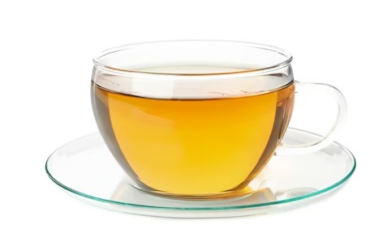

|
Mel puro em seu estado natural, com sabor floral intenso e textura crocante. Perfeito para acompanhar queijos ou sobremesas. |
R$ 29,90 (200g) |
30 |
 |
Mel artesanal e puro, extraído de colmeias locais, com sabor suave e floral. Ideal para adoçar bebidas, receitas ou consumir puro |
R$ 24,90 (350g) |
60 |
 |
Macio e recheado, com cobertura de chocolate e um toque de especiarias. Perfeito para acompanhar um café ou como sobremesa. |
R$ 7,90 (unidade) |
35 |
 |
Adoce suas bebidas com a pureza do mel em sachês práticos e deliciosos. |
R$ 2,50 |
250 |
|  |
Uma combinação refrescante de mel natural e laranja, ideal para um sabor doce e cítrico. |
R$ 5,00 |
10 |